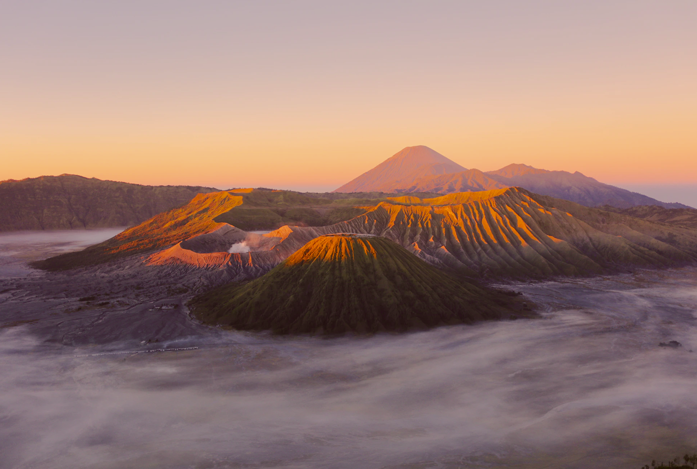
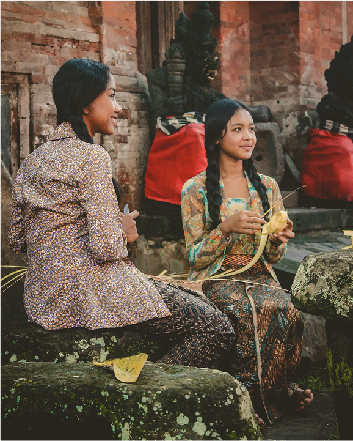

EAST NUSA TENGGARA
Have you
enjoyed your
holiday?
You will be amazed if you take part in this sailing Komodo island
tour
package. So it is also mandatory for you, besides
enjoying Komodo
tourism on Komodo Island, you also have to
taste the marine tourism.
The beautiful waters of Komodo will
make you meet many travelers
from other countries.

BROMO
Steady your steps, we
will climb together!
Enjoying the vast expanse of the sea of sand, witnessing the
splendor of Mount Semeru that soars into the
sky, and gazing at the beauty of the sun moving out of its bed or
otherwise enjoying the dim twilight from
the Bromo ridge is an unforgettable experience when visiting
Bromo.
INDONESIAN CULTURE
Our culture here
is very friendly
to people
known for his politeness, manners and gentleness. This becomes a
characteristic when they mingle with other tribes and become
basic traits
that are passed down by their ancestors.
